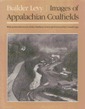

<body bgcolor="#FFFFFF" text="#000000" link="#0000FF" vlink="#CC0000" alink="#CC0000"><center><hr width="350" size="1" align="center" noshade>Compelling images portray a once-beautiful region that has been increasingly scarred by mining<hr width="350" size="1" align="center" noshade><p><a href="https://cdcshoppingcart.uchicago.edu/Cart/ChicagoBook.aspx?ISBN=9780877225881&&PRESS=temple" target="_top">Buy this book!</a> | <a href="https://cdcshoppingcart.uchicago.edu/Cart/Cart.aspx?PRESS=temple" target="_top">View Cart</a> | <a href="https://cdcshoppingcart.uchicago.edu/Cart/Cart.aspx?PRESS=temple" target="_top">Check Out</a></p><p></p></center><!--none//--><h1>Images of Appalachian Coalfields</h1>
<h3>Builder Levy, introduction by Helen Matthews Lewis, foreword by Cornell Capa</h3>
<P>cloth 0-87722-588-5 $27.95, Apr 89, <FONT COLOR=#990033>Out of Stock Unavailable</FONT>
<BR> 144 pp
8x10
93&nbsp;duotones
</P><h3 align="center"><P><font color="#996633">Philadelphia Book Clinic Certificate of Award,
1990</font></P>
</H3>
<BLOCKQUOTE><I>"I found Builder Levy�s work among the miners both sincere and sensitive in its understanding of people, their labor, and their surroundings. His approach is honest, direct, and sympathetic."</I>
<br>&#151<b>Paul Strand</b><I></I></BLOCKQUOTE>
<p>"The pictures here represent fourteen years of visiting and photographing Appalachian coal miners, their families, and neighbors. This book allows me to share my personal vision of these people and their environment, hidden from most of the nation in small towns and villages, tucked away in the hollows of the steep mountains and rolling hills of West Virginia, Kentucky, and western Pennsylvania."
<p>With compassion and sensitivity, Builder Levy presents the coal mining communities of Appalachia. His compelling images, in 93 duotones, portray a once-beautiful region that has been increasingly scarred by an industry that has never demonstrated respect for the land or its people. For several decades the U.S. coal mining industry has been in a period of transition: technological advances have created massive layoffs; women have entered the workforce; the racial composition of mining communities has changed; environmental and health advocates have gained voice. The narrative accompanying Levy�s photographs details these social and economic changes as revealed through the lives of people who endure the poverty and hardship of mining life, who cling to their family and community amid crises, and who are sustained by their traditions and their culture. The photos themselves reveal the toll that this struggle has taken. While memories of mine disasters and the daily threat of danger and black lung disease remain throughout these communities, Levy focuses on the dignity of the residents and their struggle against adverse conditions.
<p>Levy describes the sometimes mixed reception he received from miners, foremen, and company guards at various mining sites. By "reading" the images, one senses that he did not simply gain access to witness but fully participated in the daily "mantrips," the comfortable hospitality, the unity of miners surfacing after a long day underground. <I>Images of Appalachian Coalfields</I> forces the reader to confront the life of a mining community, to recognize the faces of struggle, camaraderie, defiance, endurance, and to admire the intense vision of a photographer whose love of subject pays homage to the human spirit.
<BR>&nbsp;<h2>Reviews</h2>
<p><I>"Builder Levy is part of a humanist tradition in photography that goes back to its very inception. Of all his photographic ancestors, Levy is closest to Lewis Wickes Hine. The photographs in this book move us with their aesthetic sensibility as well as by the meaning of what has been photographed. Levy never demeans, he never denigrates, he pays homage to the people he has come to love. This book is an important contribution to the heritage of socially responsive photography."</I>
<br>&#151<b>Walter Rosenblum</b>, Professor Emeritus, Brooklyn College
<p><I>"Through his photographs, Builder Levy gives an eloquent portrayal of the dignity and pride of coal miners. These images provide an honest and compassionate look at coalfield Appalachia."</I>
<br>&#151<b>Richard L. Trumka</b>, President, United Mine Workers of America
<p><i>"Levy here presents 93 sensitive black-and-white documentary photographs of miners and mining communities taken in the 1970s and early '80s in West Virginia, Kentucky and Pennsylvania. Lewis's knowledgeable introduction to Appalachian mining examines the dangers of the work and the demographics of the industry, describes union struggles and community life in the coal camp and indicts ecologically destructive company policies throughout mining history."</i>
<br>&#151<b><i>Publishers Weekly</i></b>
<BR>&nbsp;<H2>About the Author(s)</H2>
<P><b>Builder Levy</b> is a teacher in a New York City alternative high school. His photographs have been exhibited in museums and galleries, and included in permanent collections and numerous publications throughout the world.</P>
<BR><H2>Subject Categories</H2>
<p><A HREF="/tempress/art.html" TARGET="_top">Art and Photography</a>
</p>
<BR><h2 class="inpageheading">In the series</H2>
<P><I><a href="http://www.temple.edu/tempress/visual.html" onMouseOver="window.status='Click for other books in this series!'; return true;" onMouseOut="window.status=''; return true;" target="_top">Visual Studies</a></i>, edited by Douglas Harper.
</p><p><I>Visual Studies</I>, edited by Douglas Harper, will consist of a broad range of books that regard photography, film, and other visual media as vehicles for exploring social and cultural themes. We are developing a series of illustrated books that draw on photographs as primary documents and that include a substantial analytic text; however, we will also consider unillustrated manuscripts on visual subjects. Douglas Harper is a photographer and sociologist who teaches at Potsdam College of the State University of New York.</p>
<p align="center"><a href="https://cdcshoppingcart.uchicago.edu/Cart/ChicagoBook.aspx?ISBN=9780877225881&&PRESS=temple" target="_top">Buy this book!</a> | <a href="https://cdcshoppingcart.uchicago.edu/Cart/Cart.aspx?PRESS=temple" target="_top">View Cart</a> | <a href="https://cdcshoppingcart.uchicago.edu/Cart/Cart.aspx?PRESS=temple" target="_top">Check Out</a></p><p><font face="Arial" size="1"><a href="copyright.html" onMouseOver="window.status='Web Copyright Policy';return true;" onMouseOut="window.status=''" title="Web Copyright Policy">&copy;</a> 2015 <a href="http://www.temple.edu" target="new" onMouseOver="window.status='Link to Temple University home page';return true;" onMouseOut="window.status=''" title="Link to Temple University home page">Temple University</a>. All Rights Reserved. http://www.temple.edu/tempress/titles/519_reg.html</font></p>